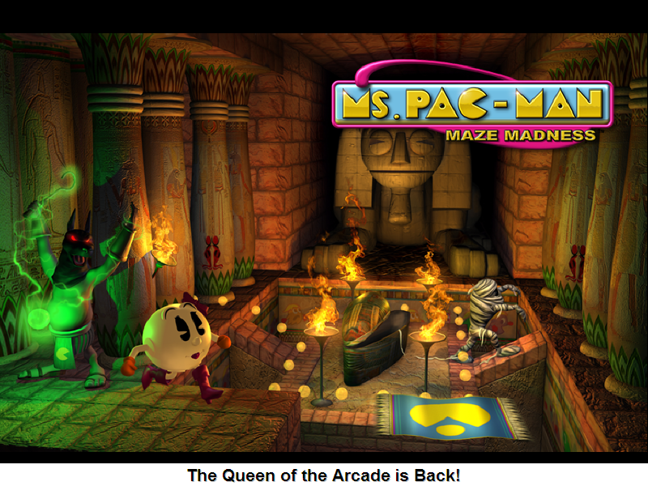
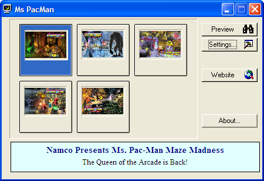
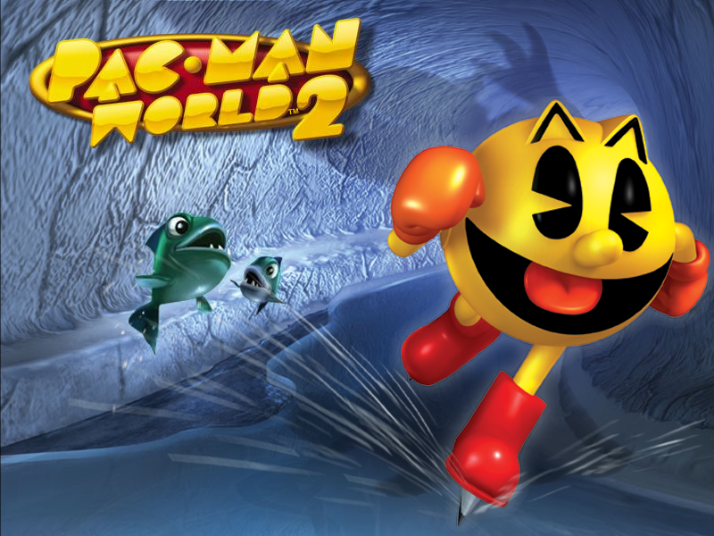

Pac-Man Screensavers

Pac-Man Screensaver (customaquariumscr.com)

DOWNLOAD
 .exe file zipped (1.62 MB)
.exe file zipped (1.62 MB)
Ms. Pac-Man: Maze Madness
Note: This is a 16-bit program and requires special programs to install on 64-bit Windows, such as otvdm.


DOWNLOAD
.exe file zipped (5.42 MB)
Pac-Man World 2

DOWNLOAD
.exe file zipped (1.46 MB)
Pac-Pix

DOWNLOAD
.exe file zipped (2.75 MB)